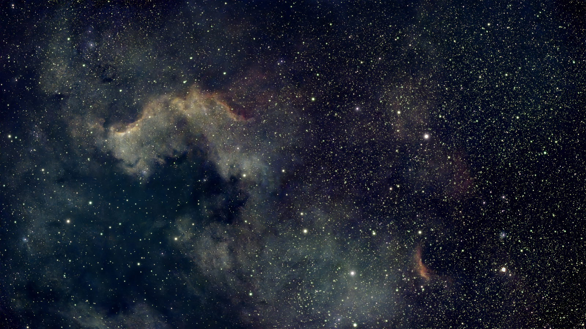
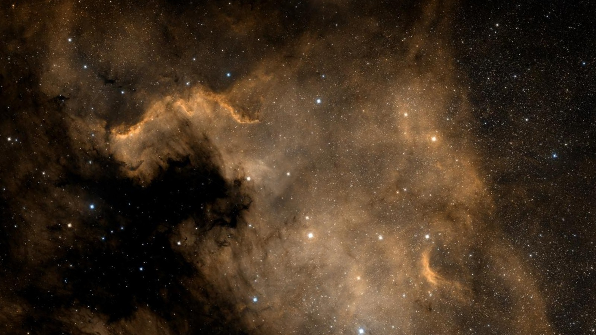

A little screen.
A much bigger sky.
Turn a Raspberry Pi into a quiet companion for nights under the stars. Find a target, choose your moment, and keep the photographs you bring home.
Photograph © Ron Hoebe
Know what the
night has in store.
Darkness, moonlight and the weather come together on one calm screen. Follow the clouds, see when a target climbs highest, and find room for it in your telescope’s frame.
Large controls keep the essentials within reach. Red night mode and backlight control help the screen stay in the background.
Meet your evening routine →
Your sky, in context.
A photograph from a tiny telescope, alongside a professional sky survey. The Pi finds the stars and matches the field, scale and rotation. Move the slider to explore.


RON’S DWARF II CAPTUREDSS2 SURVEYA place for every night.
Built around real observing sessions, with a growing photo library and room for your next telescope.
See every screen.
Targets, telescope frames, altitude tracks, captures, comparison and red night mode. Real screenshots at display resolution.
Open the showcase ↗02 — GET STARTEDBuild your panel.
Start with a Raspberry Pi 4 with 4 GB RAM or newer. Follow the installer, choose your display, and set your observing location.
Installation guide ↗03 — FIND YOUR FITTurn it your way.
Original Touch Display or Touch Display 2. Choose the rotation that suits your enclosure, with matching touch coordinates.
Display setup ↗An independent planning dashboard; it does not operate your telescope. Touch Display 2 and labwc configuration are prepared and software-tested; physical verification is pending.